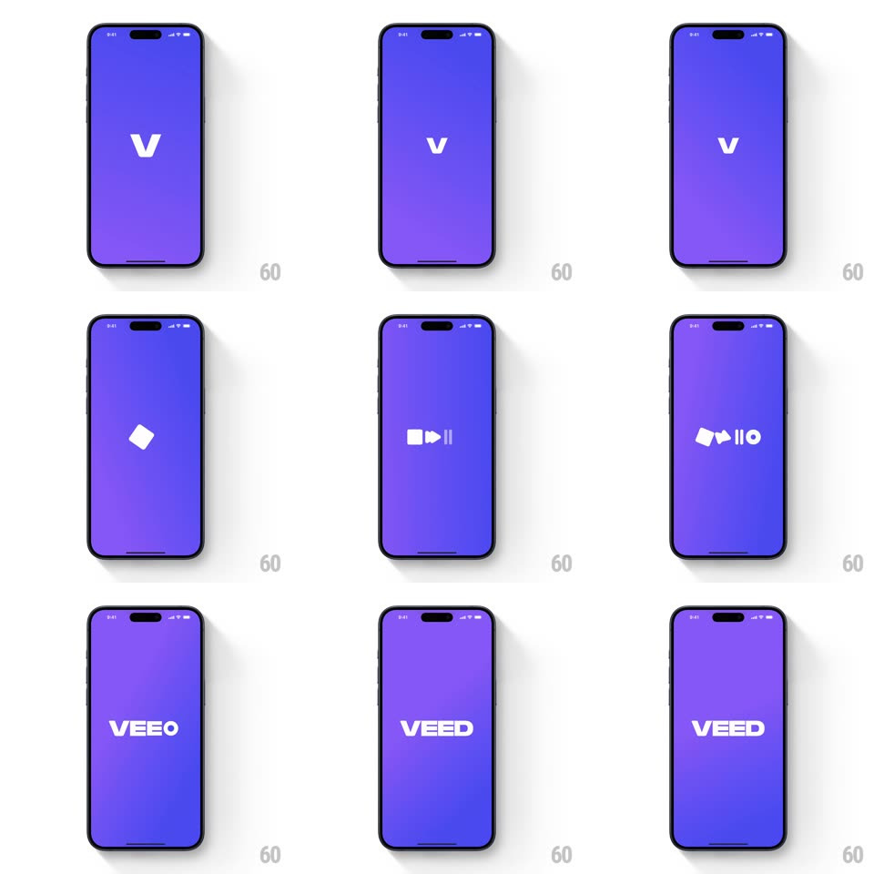

Media
Frame-by-frame

Rebuild this animation 1:1: VEED's splash - a single white "V" on the brand gradient morphs into a video icon, then expands letter by letter into the full VEED wordmark.

Rebuild this animation 1:1: VEED's splash - a single white "V" on the brand gradient morphs into a video icon, then expands letter by letter into the full VEED wordmark.
## Integration
Integration: stack-agnostic spec - springs given as stiffness/damping, timed motions as duration + curve; map every value to your framework and animation library of choice.
## Scene
A full-screen purple-blue gradient with a centered white logo; the sequence ends on the complete VEED wordmark.
## Motion spec
Pattern: letter-to-icon morph into wordmark expansion, ~1.6s.
- Hold: the "V" sits centered (~400ms).
- Morph: the V's right stroke folds into a play triangle and a small camera body slides in beside it (300ms, ease-in-out) - the letter becomes a video icon; a pause-bar and a small circle join, forming a row of editing glyphs (400ms, staggered 60ms).
- Expansion: the glyphs spread apart and transform into letters - the row re-forms as the wordmark (400ms, ease-in-out); the final letter flips into place (rotateY 180deg, 250ms) as the wordmark settles ("VEED").
## Calibration
- The morph is shape-driven: strokes fold and slide, never a crossfade of two images.
- The wordmark lands centered where the V started.
## Reduced motion
The V fades directly to the wordmark (300ms).
## Don't miss
- The intermediate glyph row must be legible as video-editing icons before becoming letters.
- One continuous gradient background - no shifts behind the logo.